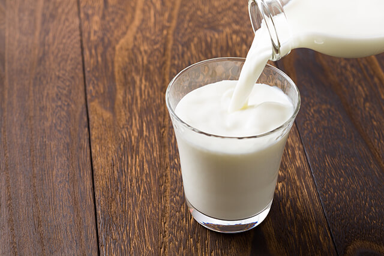

Dairy
Including sources of dairy in your meal plan is a great way to get calcium and high-quality protein.
Research shows that consuming mostly low-fat dairy products can help prevent heart disease, stroke, hypertension, colorectal cancer, type 2 diabetes, and metabolic syndrome. Keep in mind that butter, ice cream, and cream are not dairy products that provide these benefits.
Your healthiest choices for dairy foods include:
- Fat-free (skim) milk or low-fat (1%) milk
- Yogurt (regular or Greek yogurt)
- Some reduced fat cheeses (halloumi, mozzarella, feta)
- Lactose-free milk or fortified soy beverages (if you have lactose intolerance)

Droobi Tip
When drinking hot drinks, like lattes, cappuccinos and karak, avoid adding condensed milk, because it’s high in sugar. Choose low fat milk. Also, avoid the the fruit-flavored, sweetened yogurts, even if they have the word “Lite” on them –even “lite” yogurts can have added sugars.